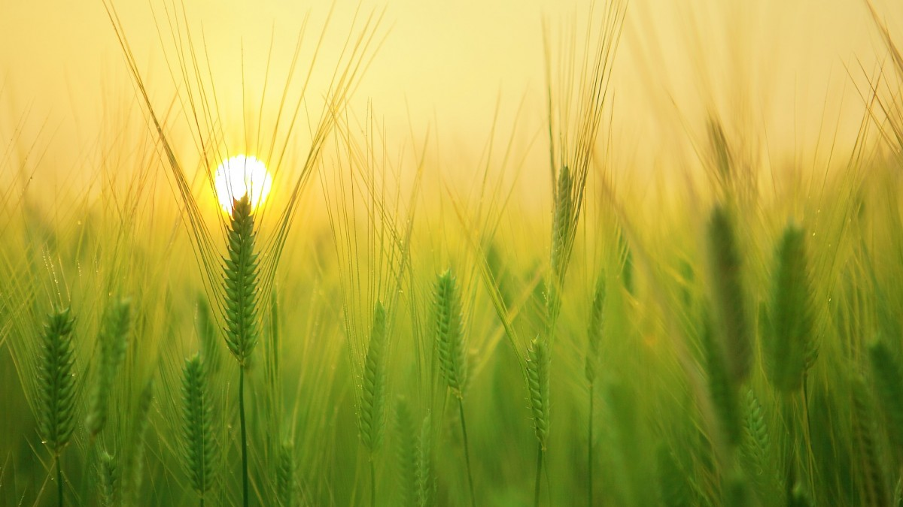
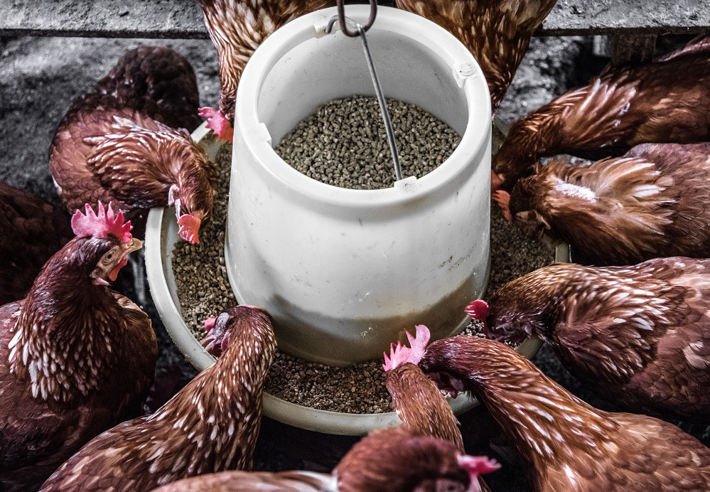
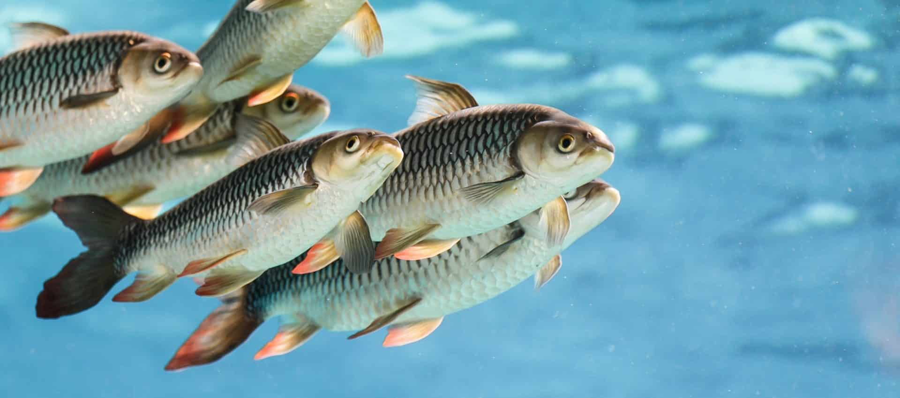

Food Sources
Food sources play a crucial role in sustaining life and maintaining overall health and well-being. These sources encompass a diverse array of items, ranging from fruits and vegetables to grains, proteins, and dairy products. Fruits and vegetables provide essential vitamins, minerals, and antioxidants, promoting a strong immune system and preventing various diseases. Grains, such as rice, wheat, and oats, serve as primary sources of carbohydrates, supplying energy for daily activities. Proteins, found in meat, fish, eggs, and legumes, are essential for muscle growth, tissue repair, and the proper functioning of enzymes. Dairy products contribute calcium for strong bones and teeth. Additionally, nuts, seeds, and oils provide healthy fats that support brain function and contribute to overall cardiovascular health. The balance and variety of food sources are crucial for meeting nutritional needs and ensuring a well-rounded and healthy diet. It is essential for individuals to make informed choices and maintain a diverse and balanced diet to support optimal health and vitality.
-
Food Crops
Food crops constitute a critical component of global agriculture, providing sustenance for the world's population. These crops encompass a wide variety of plants cultivated for human consumption, and they are essential for addressing nutritional needs and food security. Staple crops such as rice, wheat, maize (corn), and potatoes form the foundation of many diets worldwide, serving as primary sources of carbohydrates. Other food crops include fruits, vegetables, and legumes, which contribute essential vitamins, minerals, and fiber. The cultivation of food crops involves a complex interplay of factors such as climate, soil type, and agricultural practices. Different regions specialize in growing specific crops suited to their environmental conditions. For example, tropical climates may be ideal for cultivating bananas, mangoes, and tropical fruits, while temperate regions may focus on apples, berries, and root vegetables. Modern agriculture has witnessed advancements in crop breeding, genetic engineering, and sustainable farming practices to enhance yields and adaptability. However, challenges such as climate change, pests, and diseases pose ongoing threats to food crop production. Sustainable and resilient farming practices, along with technological innovations, are crucial for ensuring a stable and abundant supply of food crops to meet the growing global demand for nourishment. As the world faces the complexities of a growing population and environmental changes, the cultivation and management of diverse food crops remain pivotal for global food security and the well-being of communities worldwide.
-
Livestock
Livestock, including animals like cattle, sheep, goats, pigs, and poultry, play a vital role in global agriculture, providing a diverse array of products and services. These animals are raised for various purposes, including meat, milk, eggs, wool, leather, and other by-products. Livestock farming is an integral part of the food supply chain, contributing significantly to the nutritional needs of people around the world. One of the primary products derived from livestock is meat, which is a valuable source of protein and essential nutrients. Cattle, pigs, and poultry are among the most commonly raised animals for meat production. Livestock also contribute to the dairy industry, providing milk and dairy products such as cheese and yogurt. The wool from sheep is used in textiles, while leather from animals like cows and goats finds applications in clothing and accessories. Livestock farming practices vary globally, with different regions specializing in specific types of animals based on local preferences, climate, and resources. Intensive and extensive farming methods are employed, each with its own set of advantages and challenges. Intensive systems involve confining animals in controlled environments, while extensive systems allow animals to graze in open pastures. However, livestock farming faces challenges related to environmental sustainability, including deforestation, greenhouse gas emissions, and water usage. Balancing the growing demand for animal products with environmental conservation efforts is a significant concern. Sustainable and ethical practices, along with advancements in animal husbandry, are crucial for addressing these challenges and ensuring the welfare of both the animals and the environment. In addition to their role in food production, livestock also contribute to agricultural ecosystems through activities such as manure production, which can be used as fertilizers, and grazing, which helps maintain pasture health. Livestock farming, when managed responsibly, can be a key component of a resilient and sustainable agricultural system.
-
Aquaculture
Aquaculture, often referred to as fish farming, is the cultivation of aquatic organisms under controlled conditions for various purposes, primarily for human consumption. This rapidly growing sector of agriculture encompasses the breeding, rearing, and harvesting of fish, shellfish, and aquatic plants in environments such as ponds, tanks, and ocean enclosures. One of the primary goals of aquaculture is to meet the increasing global demand for seafood while reducing pressure on wild fish populations. Commonly farmed species include salmon, trout, tilapia, catfish, shrimp, oysters, and mussels. These species are selected based on their market demand, growth rates, adaptability to captivity, and nutritional value. Aquaculture systems can be classified into freshwater, brackish water, and marine systems, each catering to the specific needs of different aquatic species. Intensive aquaculture involves high-density cultivation in controlled environments, while extensive systems utilize larger, open areas such as ponds or cages in natural bodies of water. The industry has faced challenges related to environmental sustainability, including water quality management, disease control, and the responsible use of resources. However, advancements in technology, research, and best practices have led to improvements in the efficiency and sustainability of aquaculture operations. Beyond providing a reliable source of protein and omega-3 fatty acids, aquaculture contributes to economic development by creating employment opportunities and supporting coastal communities. Additionally, aquaculture can play a role in ecosystem restoration and conservation when integrated with environmental management practices. As the demand for seafood continues to rise, aquaculture remains a crucial component of global food production. Responsible and sustainable aquaculture practices are essential for balancing the need for increased production with environmental stewardship, ensuring the long-term viability of this important sector in meeting global food security challenges.